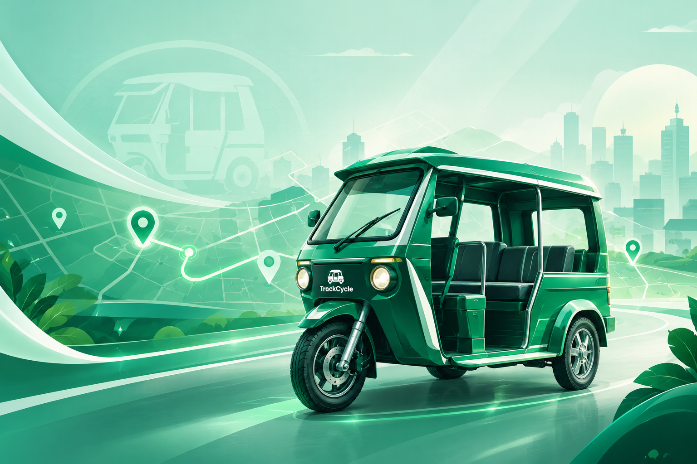

A simpler way to ride in BARANGAY A
Reserve your tricycle seat, follow your station queue, and keep your trip details together in one place.

Making tricycle transportation easier, faster, and more organized.
Reserve a seat by selecting your station and destination in just a few clicks.
Monitor seat availability, queue number, and departure timer in real time.
Review your previous reservations anytime through your booking history.
View your reservation receipt after every completed booking.
Reserve your ride in just four simple steps.
Choose your pickup station from the available locations in BARANGAY A.
Select where you want to go and the number of seats you need.
Monitor the live queue, available seats, and departure countdown.
Board the tricycle once the boarding timer starts and pay the driver directly.
Stay informed with the latest updates from TrackCycle.
Reserve your tricycle seat quickly and conveniently through our website.
Trips depart every 15 minutes or earlier if all 6 seats are filled.
Please prepare the exact fare. Payment is made directly to the driver upon boarding.